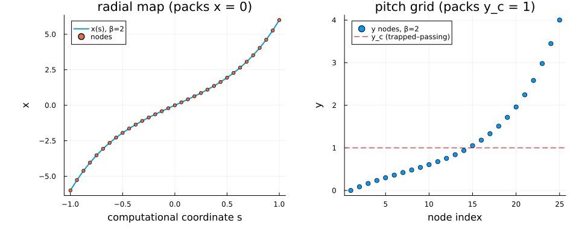
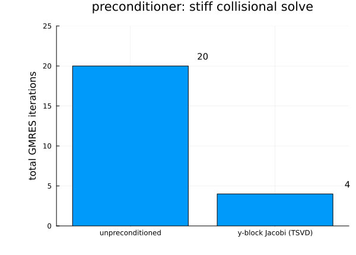
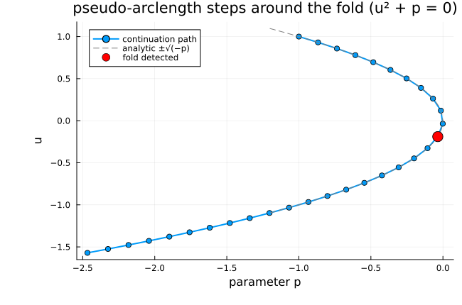
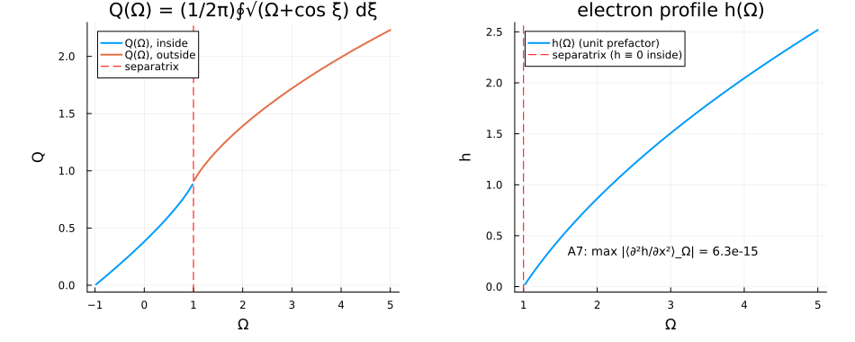
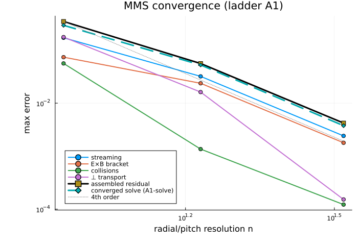

Islands — numerics as implemented (M1–M2)
This chapter documents the Islands machinery as it exists in the code today — the discretization, operator stack, solver, and output-moment assembly landed by milestones M1 and M2, with the verification evidence behind each piece. It is the "Physics Book" companion to the aspirational design documents: the design docs say what Islands will compute; this page says what is implemented and verified now, equation by equation.
Everything on this page is structure and numerics. Under the module's [VERIFY] policy (src/Islands/CLAUDE.md), no physics coefficient, sign, or normalization from the drift-kinetic literature has been assigned a value anywhere in src/: every such quantity enters as a supplied, gated parameter (many deliberately default to NaN so an un-cleared convention poisons results rather than guessing). The human clearance queue that un-gates the physics is QUESTIONS.md entries Q2–Q4; until then the physics benchmarks (benchmarks/islands/) ship skipped by design.
1. Phase space and discretization
The Level-0 solve lives on the orbit-averaged phase space $(x, \xi;\, y, E, \sigma)$ — radial distance from the rational surface, helical angle, pitch $y = \lambda B_{\max}$, energy, and the parallel-velocity sign $\sigma = \pm 1$ (design 03 §1). Implemented in Islands.PhaseSpace:
Helical angle $\xi$ — Fourier pseudo-spectral on the periodic domain. The dense spectral derivative on an even number $n$ of uniform nodes is
\[(D_1)_{jk} \;=\; \frac{(-1)^{j-k}}{2}\,\cot\!\Big(\frac{(j-k)\,h}{2}\Big), \qquad j \neq k,\quad h = \tfrac{2\pi}{n},\]
exact for bandlimited data (verified to $6\times10^{-15}$ in the tests).
Radial $x$ and pitch $y$ — high-order finite differences on layer-clustered grids. A uniform computational coordinate $s \in [-1, 1]$ maps to the physical coordinate through a monotone $\sinh$ stretching that packs nodes at the internal layers the drift-kinetic problem develops (04 §1–2):
\[x(s) \;=\; x_c + L\,\frac{\sinh(\beta s)}{\sinh(\beta)} \qquad\Longrightarrow\qquad \frac{d}{dx} = \frac{1}{x'(s)}\frac{d}{ds},\quad \frac{d^2}{dx^2} = \frac{1}{x'(s)^2}\frac{d^2}{ds^2} - \frac{x''(s)}{x'(s)^3}\frac{d}{ds}.\]
The radial grid packs toward the rational surface $x = 0$; the pitch grid toward the trapped–passing boundary $y_c$ — the two layers whose widths scale as $\nu^{1/2}$ and set the prior art's operating floor (04 §2). Derivative matrices use Fornberg weights on windows of $\mathrm{order}+d$ points for the $d$-th derivative, so $D_1$ and $D_2$ hold the design order uniformly, including at boundary rows. Composite-Simpson weights on the same nodes (pushed through the map Jacobian) give quadrature at matching order.
Energy $E$ — Gauss–Laguerre nodes and weights: the Level-0 Maxwellian weight $\int_0^\infty f(E)\, e^{-E}\, dE = \sum_i w_i f(E_i)$ (a slowing-down background at Level 2 changes the map, not the machinery).

Implementing symbols: PhaseSpace.FourierGrid, PhaseSpace.MappedFDGrid, PhaseSpace.GaussGrid, PhaseSpace.IslandGrid, PhaseSpace.fd_weights.
2. The operator stack
The unknowns are $U = (g,\, \tilde\Phi)$ — the orbit-averaged distribution $g(x, \xi, y, E, \sigma)$ per species and the electrostatic potential $\tilde\Phi(x, \xi)$ — and the steady-state residual is assembled as a sum of independent operator applications (design 03 §2; no term inspects which others are active, no regime branches anywhere):
\[R_g(U) \;=\; \sum_{\text{terms } T} T[U], \qquad R_\Phi(U) \;=\; M[g] - \alpha\,\tilde\Phi ,\]
with the Level-0 term structures (each coefficient below is supplied data, its physics value gated):
| Term | Structure | Gated coefficient |
|---|---|---|
ParallelStreaming | $a_\xi\, \partial_\xi g + a_x\, \partial_x g$ | island-induced streaming frequencies |
MagneticDrift | $c_D\, \partial_\xi g$ (with the :original/:improved $\hat L_B^{-1}$ toggle) | the precession frequency $\hat\omega_D(y, E; \sigma)$ |
ExBDrift | $c_E \left( \partial_\xi\tilde\Phi\, \partial_x g - \partial_x\tilde\Phi\, \partial_\xi g \right)$ — the $(x,\xi)$ Poisson bracket, the one state-nonlinear Level-0 term | the $E\times B$ coupling |
PitchAngleDiffusion | $c\,(K g)$ along $y$ (mimetic form, §3) | $\hat\nu(E)$ and the pitch diffusivity profile |
GradientDrive | additive source | the $(\mathbf v_E + \mathbf v_D + \mathbf v_{\tilde\psi})\cdot\nabla F_0$ drive |
Quasineutrality | $M[g] - \alpha\tilde\Phi$ | the closure coefficient $\alpha$ |
Every apply! kernel is allocation-free (a CI regression test holds this at 0 bytes) and generic over the element type, so ForwardDiff dual numbers flow through the entire stack — that is what makes the solver's Jacobian exact (§5).
Implementing symbols: Operators.AbstractTerm, Operators.apply!, Operators.residual!, Operators.IslandStack.
3. The conservative collision structure
Bootstrap physics is unforgiving about non-conservative collision operators (design 00, risk register), so the pitch-angle operator is implemented in mimetic divergence form. With gradient matrix $G$ (the $y$-grid $D_1$), quadrature weights $w_q$, a supplied non-negative diffusivity profile $P(y)$ and measure $w(y)$:
\[K \;=\; -\,W_q^{-1}\, G^{\mathsf T}\, \mathrm{diag}(P \circ w_q)\, G, \qquad W_q = \mathrm{diag}(w \circ w_q),\]
which enjoys the two Level-0 conservation properties exactly in floating point, not just asymptotically:
\[\mathbf 1^{\mathsf T} W_q K g = -\,(G\mathbf 1)^{\mathsf T}\,\mathrm{diag}(P \circ w_q)\,(G g) = 0 \quad\text{(particles; } G\mathbf 1 = 0\text{)},\]
\[g^{\mathsf T} W_q K g = -\,(G g)^{\mathsf T}\,\mathrm{diag}(P \circ w_q)\,(G g) \;\le\; 0 \quad\text{(entropy sign)}.\]
Verified to $10^{-14}$ (ladder A4). A physically-profiled $P$ vanishes at the pitch-domain endpoints, so zero-flux boundary behavior is built into the operator — no artificial $y$ boundary conditions. (This mattered in practice: the generic $a_y \partial_y^2$ form without boundary conditions is an unstable BVP discretization under refinement; the mimetic degenerate form is the correct structure.)
Implementing symbols: Operators.conservative_pitch_operator, Operators.PitchAngleDiffusion.
4. Boundary conditions
Far-field rows at $|x| = L_x$ are replaced by matching conditions $g - g_\infty$ and $\tilde\Phi - \tilde\Phi_\infty$ (Dirichlet-type against supplied far-field states). Never bare Neumann $\partial_x g = 0$: the prior art traced a spurious "winged" solution branch directly to Neumann non-uniqueness (01 §3). The physical far field — the no-island neoclassical solution — is gated physics, so the code takes it as supplied data; the tests use manufactured far fields. These conditions are also what make the first-order-in-$x$ advective solve well-posed.
Implementing symbols: Operators.FarFieldConditions, Operators.apply_farfield!.
5. The Newton–Krylov solve
Decision D2: steady-state Newton–Krylov, never time-stepping and never the sources' nested Picard loops (which, per the prior-art forensics, never met their own convergence criterion in production). The pieces (design 04 §5):
Exact matrix-free Jacobian. The directional derivative comes from one dual- number sweep of the residual — no finite-difference Jacobian, no global sparse matrix:
\[J(u)\,v \;=\; \left.\frac{d}{d\varepsilon}\right|_{\varepsilon=0} F(u + \varepsilon v) \quad\text{via ForwardDiff duals through the stack.}\]
Inexact Newton with Eisenstat–Walker forcing. Each step solves $J\,\delta u = -F$ by GMRES only to the tolerance the outer iteration needs,
\[\eta_k = \gamma \left( \frac{\lVert F_k \rVert}{\lVert F_{k-1} \rVert} \right)^{2},\]
with a backtracking line search on $\lVert F \rVert$. Convergence is declared on the norm and the pointwise maximum of the residual — the array-averaged residual famously hid locally divergent regions in the prior art.
Physics-block preconditioning with explicit regularization. The stiff pitch-direction blocks are factored per pencil by SVD and truncated below $\epsilon\,\sigma_{\max}$ — the deliberate treatment of the intrinsically near-singular trapped–passing matching block (04 §3; the prior art measured $\mathrm{rcond} \sim 10^{-16}$ there and got machine-dependent noise, not crashes, under plain LU). On a collision-dominated test solve the block-Jacobi preconditioner cuts the work by an order of magnitude:

A companion diagnostic tracks the smallest singular value of the $y_c$-block of the (tiny-grid, debug) dense Jacobian — ladder A8 — so a silent conditioning regression is tested for, not observed.
Implementing symbols: Solvers.newton_krylov, Solvers.JVPOperator, Solvers.YBlockJacobi, Solvers.dense_jacobian, Verify.yc_block_sigma_min.
6. Continuation and fold detection
Δ-surface generation, Newton globalization, and (at Level 3) the penetration bifurcation all ride on pseudo-arclength continuation, so fold handling is in from day one. The corrector solves the extended system
\[G(z) = \begin{pmatrix} F(u, p) \\ t \cdot (z - z_{\text{pred}}) \end{pmatrix} = 0, \qquad z = (u, p),\]
with a secant tangent $t$ and fold detection via sign reversal of the tangent's parameter component $t_p$:

Implementing symbol: Solvers.pseudo_arclength.
7. Island geometry, the electron-closure functions, and the Δ moments
The island flux-surface label is the pinned module convention (half-width $w$):
\[\Omega(x, \xi) = \frac{2x^2}{w^2} - \cos\xi, \qquad \Omega = -1 \text{ at the O-point},\quad \Omega = +1 \text{ at the separatrix},\]
with the flux-surface average $\langle f \rangle_\Omega = \oint f\,(\Omega + \cos\xi)^{-1/2} d\xi \,/\, \oint (\Omega + \cos\xi)^{-1/2} d\xi$ — a diagnostic only, never a solve coordinate (Decision D1). The flattened-electron closure geometry is implemented as structure with a supplied amplitude:
\[Q(\Omega) = \frac{1}{2\pi} \oint \sqrt{\Omega + \cos\xi}\; d\xi, \qquad h(\Omega) = \Theta(\Omega - 1)\; C \int_1^{\Omega} \frac{d\Omega'}{Q(\Omega')},\]
so $h$ is exactly flat inside the separatrix. Because $h'(\Omega) = C/Q$, the chain rule gives the coefficient-free consistency identity (ladder A7 — the unit target that historically caught inherited bugs in this lineage):
\[\Big\langle \frac{\partial^2 h}{\partial x^2} \Big\rangle_{\!\Omega} = \frac{4}{w^2}\left[ h''(\Omega)\, \frac{Q}{Q'} \; +\; h'(\Omega) \right] \;\equiv\; 0 ,\]
verified to $10^{-16}$ for arbitrary amplitude $C$:

The output moments are the two Ampère projections of the species-summed parallel current $\bar J_\parallel = \sum_j Z_j \int W_j\, g_j$ (01 §4):
\[\Delta_{\cos} = C_{\cos} \int dx \oint d\xi\; \bar J_\parallel \cos\xi, \qquad \Delta_{\sin} = C_{\sin} \int dx \oint d\xi\; \bar J_\parallel \sin\xi,\]
where the $\xi$-projection is spectrally exact on the periodic grid and the prefactors $C_{\cos}, C_{\sin}$ (physically $\mp\mu_0 R / 2\tilde\psi$) are required, gated arguments — $\tilde\psi$ carries an open [VERIFY] and the sin normalization is [DERIVED]-unpinned (QUESTIONS Q4). The parity structure $\Delta_{\cos}$ even / $\Delta_{\sin}$ odd under $\xi$-reflection is verified exactly (ladder A3).
Implementing symbols: Moments.parallel_current!, Moments.delta_moments, Moments.omega_average, Fields.Q_omega, Fields.h_profile, Fields.flat_average_d2h_dx2.
8. Verification evidence (the A-ladder, all green in CI)
The manufactured-solution ladder verifies discretization order and the AD plumbing simultaneously — per operator, for the assembled residual, and through a full converged Newton solve forced by the analytic source:

| Gate | Statement | Result |
|---|---|---|
| A1 | per-operator + assembled MMS at design order | 4th order ($\xi$ spectral to $10^{-15}$) |
| A1-solve | converged Newton solve recovers the manufactured state | observed order 3.98 |
| A2 | AD Jacobian–vector product vs. central finite differences | agree to $\sim 10^{-9}$ |
| A3 | $\Delta_{\cos}$ even / $\Delta_{\sin}$ odd parity | exact |
| A4 | particle conservation + entropy sign of the collision operator | exact ($10^{-14}$ / definite) |
| A5 | zero-drive null: $g \equiv 0 \Rightarrow R = 0$ | exactly machine zero |
| A7 | $\langle \partial^2 h / \partial x^2 \rangle_\Omega = 0$ | $10^{-16}$ |
| A8 | $y_c$-block $\sigma_{\min}$ monitor + singular detection | active |
| — | allocation regression on every hot kernel | 0 bytes |
Everything above regenerates from one pinned script (benchmarks/islands/figures/make_structural_figures.jl) and runs in the test suite (test/runtests_islands_{grids,operators,solve}.jl); the islands_l0_structural regression case tracks the headline numbers across commits.
9. What comes next
The physics story — the drift-kinetic coefficients, the drift-model threshold scalings and toggle differentials, the $\Delta_{\text{pol}}(\omega_E)$ sign-reversal behavior — is written as the Paper I figure contract and un-gates claim by claim as the derivation lane and human clearances (QUESTIONS.md Q2–Q4) are worked through. Following the SLAYER-validation precedent (Park 2022 / Burgess 2026), the physics gates are tiered by reproducibility (Decision D9, docs/05): scalings, regime trends, and internally-controlled differentials are the primary quantitative checks; absolute literature numbers (e.g. the "$8.73 \to 1.46\, \rho_{bi}$" drift-model shift) are reported only alongside an input manifest and sensitivity scan, because reproducing an absolute threshold requires every input of the source's exact scenario — which the lineage under-specifies. The design documents hold the full eight-milestone program.